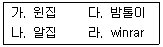
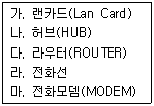

인터넷정보관리사-2급 (2008-03-16 기출문제)
1과목: 인터넷의 이해
1. 인터넷에 대한 설명으로 옳지 않은 것은?
- 클라이언트/서버 시스템을 기반으로 한다.
- 유닉스 운영체제에만 인터넷 사용이 가능하다.
- 중앙에 어떠한 통제기구가 없다.
- 시간과 공간의 제약이 없이 원하는 정보를 거의 실시간으로 제공 받을 수 있다.
(정답률: 100%)

2. 오늘날 널리 이용되는 인터넷의 효시는 무엇인가?
- DNIS
- Intranet
- ARPANET
- Client network
(정답률: 69%)
3. IP 클래스 중 국가나 대형 통신망에 사용되는 클래스는?
- A 클래스
- B 클래스
- C 클래스
- D 클래스
(정답률: 72%)
4. 인터넷과 관련된 기술적이고 일반적인 정보를 제공하는 문서로서 주로 일반인에게 홍보하기 위한 문서를 무엇이라고 하는가?
- FYI
- RFC
- I-Ds
- IRG
(정답률: 46%)
5. 인터넷 주소체계에 대한 설명으로 틀린 것은?
- IP주소는 인터넷에 연결된 컴퓨터에 부여되는 숫자로 된 고유의 주소를 뜻한다.
- IPv6는 128bit로 이루어져 있다.
- E클래스의 경우 멀티캐스트용으로 예약되어 있다.
- IPv4는 10진수 숫자로 표기된다.
(정답률: 알수없음)
6. 도메인 등록 기관을 통해 등록할 수 있는 이름이 아닌 것은?
- ihd-ihd.or.kr
- info_ihd.or.kr
- ihdmap.or.kr
- 22ihd.or.kr
(정답률: 34%)
7. 차상위 도메인과 그에 대한 설명이 바르게 짝지어지지 않은 것은?
- go : 중앙정부기관
- ne : 네트워크 관리기관
- ms : 고등학교
- pe : 개인
(정답률: 93%)
8. 인터넷 관련 기구 중 WWW와 관련된 표준안의 제안과 제작을 담당하는 기구는?
- ISO
- W3C
- IRTF
- ICANN
(정답률: 59%)
9. 한국정보통신산업협회 홈페이지 주소로 맞는 것은?
- http://www.kait.co.kr
- http://www.kait.go.kr
- http://www.kait.ne.kr
- http://www.kait.or.kr
(정답률: 42%)
10. 모든 보내는 메일에 자신의 서명이 나타나도록 서명을 입력하려면 아웃룩 익스프레스 6.0의 어느 메뉴를 선택해야 하는가?
- [도구]-[옵션]-[서명]
- [도구]-[주소록]-[서명]
- [보기]-[서명]
- [메시지]-[개인]
(정답률: 42%)
11. 전자우편 주소로 도착한 메시지를 수신하기 위한 통신규약들만 옳게 짝지어진 것은?
- SMTP, POP3
- SMTP, IMAP
- POP3, IMAP
- NNTP, POP3
(정답률: 46%)
12. FTP 서비스 관련 내용 중 틀린 것은?
- FTP는 File Transfer Progress 약자이다.
- FTP는 원격지의 컴퓨터 간에 파일을 교환 할 수 있다.
- 주로 이용되는 FTP 전용 소프트웨어에는 WS_FTP, Cute_FTP, 알 FTP가 있다.
- 텍스트 파일과 이미지 파일 모두 전송이 가능하다.
(정답률: 42%)
13. Anonymous FTP에 대한 설명으로 틀린 것은?
- 인터넷 사용자라면 누구나 익명으로 접속하여 파일을 수신할 수 있다.
- 공개된 파일은 일반적으로 ‘Pub’ 디렉토리에 저장된다.
- 일반 사용자는 파일을 수정하거나 삭제하는 것도 가능하다.
- 사용자의 접속이 많은 경우 Mirror Site를 제공하기도 한다.
(정답률: 알수없음)
14. 전자게시판의 일종으로 네트워크상에서 특정한 주제나 관심사에 대하여 자유롭게 의견을 제시하는 세계적인 토론 시스템을 무엇이라고 하는가?
- Find
- UMS
- USENET
- IRC
(정답률: 67%)
15. 뉴스그룹에는 모그룹을 기준으로한 계층구조로 하위그룹이 생성되어 있는데, 한글로 된 ‘구인/구직 안내 및 정보’를 제공하는 곳을 옳게 찾아간 것은?
- han.rec.want
- work.wants
- han.talk.sale
- han.misc.jobs
(정답률: 57%)
16. 메신저에 새로이 추가되고 있는 기능으로 ‘텍스트 메시지를 사운드로 읽어주는 기능’은 무엇인가?
- UCC
- TTS
- Bluetooth
- PCS
(정답률: 알수없음)
17. 전자상거래에 대한 설명으로 틀린 것은?
- 개인정보가 누출될 수도 있다.
- 소비자는 쇼핑의 비용을 절약할 수 있다.
- 다국적 언어의 구현과 글로벌 마케팅은 불가능하다.
- 시간과 공간의 제약을 받지 않는다.
(정답률: 80%)
18. 다음 전자상거래의 유형 중 기업과 소비자간 거래 유형은 어느 것인가?
- BtoP
- BtoC
- GtoP
- CtoP
(정답률: 60%)
19. 전자상거래에서 신용카드를 기반으로 하는 전자결재 보안의 표준안은 무엇인가?
- ERP
- EDI
- SSE
- SET
(정답률: 37%)
20. 저작권법상 출판권의 존속기간에 대한 설명으로 옳은 것은?
- 설정행위에 특약이 없을 때에는 맨 처음 출판한 날로부터 3년간 존속한다.
- 설정행위에 특약이 없을 때에는 맨 처음 출판한 날로부터 50년간 존속한다.
- 설정행위에 특약이 없을 때에는 맨 처음 출판한 다음해부터 50년간 존속한다.
- 생존시 출판한 날로부터 50년간, 그리고 사후 10년간 존속한다.
(정답률: 알수없음)
21. 컴퓨터프로그램보호법상 프로그램 저작권은 언제부터 발생하는가?
- 프로그램이 공표된 다음해부터
- 프로그램이 공표된 후 50년 뒤부터
- 프로그래머가 법원에 저작권을 신고한 때부터
- 프로그램이 창작된 때부터
(정답률: 43%)
22. 저작권법상 보호받지 못하는 저작물은 어느 것인가?
- 지도
- 사실 전달하는 시사보도
- 서예
- 건축물
(정답률: 65%)
23. 컴퓨터프로그램보호법에서 ‘프로그램을 유형물에 고정시켜 새로운 창작성을 더하지 아니하고 다시 제작하는 행위’를 무엇이라 하는가?
- 복제
- 개작
- 공표
- 배포
(정답률: 알수없음)
24. 공개 자료실 사용시 지켜야 할 네티켓에 대한 설명으로 가장 적절하지 않은 것은?
- 상업용 소프트웨어는 올리지 않는다.
- 공개용 소프트웨어는 올리지 않는다.
- 이미 올려진 중복된 자료는 올리지 않는다.
- 음란물을 올리지 않는다.
(정답률: 88%)
25. 전자우편을 사용할 때의 네티켓으로 가장 올바르지 않은 것은?
- 불필요한 내용의 전자 우편이 메일 서버에 남지 않도록 한다.
- 회원들을 대상으로 전자 우편을 보낼 때에 더 이상 받아 보고 싶지 않은 사용자를 위해 ‘수신거부’ 기능을 제공한다.
- 소비자를 보호하지 않는 기업에게는 대용량의 파일을 첨부하여 항의성 전자 우편을 보낸다.
- 전자 우편은 자주 점검하고 꼭 저장해야 하는 것을 제외하고는 지우도록 한다.
(정답률: 82%)
26. 메일링리스트를 사용할 때 지켜야할 네티켓으로 가장 옳지 않은 것은?
- 메일링리스트는 자유롭게 이용할 수 있으므로 어떠한 분야의 메일링리스트에나 가서 궁금한 사항을 모두 질문을 한다.
- 타인에게 폐가되는 언어는 삼가해야 한다.
- 쓸데없이 같은 메일을 여러 번 보내지 말아야한다.
- 메일링리스트는 하루에도 수십 통씩 메일이 각 회원에게 보내지므로 필요 없는 내용이 담긴 메일은 보내서는 안된다.
(정답률: 73%)
27. 광고나 마케팅을 목적으로 인터넷이나 PC통신에서 주로 소프트웨어를 내려받아 설치할 때 자동으로 함께 설치되는 것으로 사용자의 각종 개인 정보를 유출시키는 소프트웨어 및 프로그램을 의미하는 것은?
- Shareware
- Middleware
- Groupware
- Spyware
(정답률: 62%)
28. 컴퓨터의 구성 요소 중 보조기억장치에 속하지 않는 것은?
- RAM
- 하드 디스크
- 플로피 디스크
- 자기 디스크
(정답률: 알수없음)
29. 사용자가 컴퓨터를 원활히 사용할 수 있도록 컴퓨터 시스템을 제어하며 컴퓨터와 사용자간의 상호 교신을 담당하는 시스템 소프트웨어를 총칭하는 것은?
- 부트 스트래핑
- 바이트
- 운영체제
- 플러그 앤 플레이
(정답률: 50%)
30. zip 파일을 다운받았을 때 이 압축을 풀수있는 프로그램으로 적절한 것은?

- 가
- 가, 나
- 나, 다, 라
- 가, 나, 다, 라
(정답률: 19%)
31. 전용선을 이용한 인터넷 접속에서 전용 회선의 종류와 채널 수의 연결이 틀린 것은?
- T1 : 24개
- T2 : 93개
- T3 : 186개
- E1 : 30개
(정답률: 67%)
32. xDSL의 종류와 그에 따른 설명으로 틀린 것은?
- VDSL : xDSL중에서 최고 속도를 내며 VOD, 멀티미디어, 원격교육 등의 대용량 데이터 처리에 적합하다.
- HDSL : 상ㆍ하향 속도가 다른 비대칭형이며, 전송 품질이 좋지만 모니터링 장비가 필요하다.
- RADSL : ADSL과 SDSL의 장점을 취합하였으며, 통신선로 변화에 능동적인 대처가 가능하다.
- ADSL : 비대칭 디지털 가입자 회선이라부르며, 전화선을 이용하고 데이터 신호는 고주파대를 사용한다.
(정답률: 알수없음)
33. 케이블 TV망을 이용한 인터넷 접속에 대한 설명으로 틀린 것은?
- 케이블 TV망이 설치된 지역에서만 서비스가 가능하다.
- 전화선 모뎀이나 ISDN에 비해 Mbps급 이상의 초고속 통신이 가능하다.
- 인터넷 서비스를 받으려면 케이블 모뎀과 네트워크 카드 등의 장비가 필요하다.
- 24시간 인터넷 이용은 일반적으로 불가능 하다.
(정답률: 77%)
2과목: 인터넷 자원 탐색
34. ISDN의 채널 중 사람의 음성, 비디오 등의 데이터를 항상 64Kbps로 전송하는 것은?
- B채널
- D채널
- H채널
- 신호채널
(정답률: 58%)
35. 전용선을 통한 인터넷을 이용시 필요한 장비를 올바르게 고른 것은?

- 가, 다, 마
- 가, 나, 다
- 다, 라, 마
- 가, 다, 라
(정답률: 91%)
36. 인터넷 익스플로러 6.0에서 플러그인 프로그램을 설치해야만 볼 수 있는 파일의 확장자는?
- GIF
- HTML
- JPG
(정답률: 59%)
37. 다음 확장자에 대한 설명으로 틀린 것은?
- doc : Microsoft Word 문서를 저장한 워드프로세서 파일
- gul : 워드패드 문서를 저장한 워드패드 파일
- xls : 엑셀 문서를 저장한 엑셀 파일
- txt : 메모장 등으로 작성한 텍스트 저장 파일
(정답률: 43%)
38. URL의 구성 요소에 포함되지 않는 것은?
- 인터넷 서비스 종류
- 해당 서버 내의 추가적인 경로
- 접근할 포트 번호
- 사용할 인터넷 프로토콜의 버전
(정답률: 10%)
39. 쿠키(cookie)에 대한 설명으로 틀린 것은?
- 텍스트 형식의 파일로서 사용자의 하드디스크에 저장된다.
- 사용자 정보를 유지할 수 없는 HTTP의 한계를 극복하기 위한 방법으로 사용된다.
- 쿠키를 사용하면 보안기능이 강화된다.
- 웹 사이트와 인터넷 사용자의 컴퓨터 사이에서 통신을 매개한다.
(정답률: 64%)
40. HTML에 대한 설명으로 틀린 것은?
- 자신의 로컬 폴더에 저장되어 있는 문서나 외부에 있는 사이트를 연결시킬 수 있다.
- HTML 파일을 이용하면 그래픽, 사운드, 동영상과 같은 멀티미디어 요소도 링크할 수 있다.
- HTML 파일은 다른 문서들과 링크가 가능 하지만, 같은 문서 내에서는 링크할 수 없다.
- HTML에서 하이퍼텍스트와 관련되어 사용되는 태그는 <A>이다.
(정답률: 64%)
41. 홈페이지 제작시 유의 사항과 가장 거리가 먼 것은?
- 로딩 속도와는 상관없이 되도록 많은 그림 파일과 애니메이션 파일을 사용하여 효과적으로 정보를 전달할 수 있도록 해야 한다.
- 주제와 어울리는 그림과 내용으로 일관성 있는 홈페이지를 구성하도록 한다.
- 자신만의 색깔이 있고 방문자에게 유용한 정보를 줄 수 있는 독특한 홈페이지를 제작 하도록 한다.
- 홈페이지에 대한 사이트맵 등을 제공하여 최대한 빠른 시간 내에 유용한 정보를 찾을 수 있게 한다.
(정답률: 알수없음)
42. <img src=“그림”>이라는 HTML 태그에 그림의 설명문구인 텍스트 박스를 만드는 속성은?
- align
- alt
- em
- code
(정답률: 50%)
43. 다음 중 열어본 하이퍼링크의 색을 정의하고자 할 때 사용되는 속성 값은 무엇인가?
- link
- alink
- vlink
- slink
(정답률: 40%)
44. 위지윅(WYSIWYG) 기반의 웹 에디터가 아닌 것은?
- DreamWeaver
- Frontpage
- UltraEdit
- Namo Web Editer
(정답률: 67%)
45. 인터넷 방송의 핵심 기술로 동영상과 같은 멀티미디어 파일을 다운로드의 형태로 받아 보는 것이 아니라, 실시간으로 파일을 전송해 오면서 동시에 볼 수 있는 기술은?
- RFID
- Cookie
- Broadcasting
- Streaming
(정답률: 50%)
46. 사이버 범죄에 대한 대비 방안으로 가장 올바르지 못한 것은?
- 해킹 방지를 위해 방화벽을 사용한다.
- 바이러스 방지를 위해 주기적으로 백신 프로그램을 이용하여 검사한다.
- 공동 PC일 경우 인터넷 익스플로러에 있는 자동완성 기능을 가능하면 사용하지 않는다.
- 비밀번호는 항상 하나만 사용한다.
(정답률: 87%)
47. 다음중 이미지 파일로만 짝지어진 것은?
- JPEG, ASF, MOV
- PCX, BMP, JPEG
- TIF, WAV, ASF
- GIF, MOV, MPEG
(정답률: 64%)
48. 멀티미디어 장비 중 전기신호를 소리로 변환하는 전자기계 변환기는?
- 마우스
- 스캐너
- 디지타이저
- 스피커
(정답률: 58%)
49. 웹 브라우저가 자체적으로 실행하지 못하는 파일 형식들을 지원하기 위해 자동 설치되어 브라우저의 기능을 확장해 주는 외부 프로그램을 무엇이라 하는가?
- 메타(Meta) 프로그램
- 플러그인(Plug-in) 프로그램
- 임베디드(Embedded) 프로그램
- 보이스(voice) 프로그램
(정답률: 86%)
50. 프록시 서버의 기능으로 틀린 것은?
- 파일공유 기능
- 캐시 기능
- 보안 기능
- 데이터 중계 기능
(정답률: 알수없음)
51. 웹 브라우저의 기능을 확장해 주는 외부 프로그램과 관련된 파일 형식이 올바르게 연결된 것은?
- Windows Media Player : hwp
- Realplayer : ra
- Microsoft Powerpoint : mov
- Acrobat reader : avi
(정답률: 28%)
52. 다음 중 음성을 기록하는 파일의 확장자로서 적당한 것은?
- GUL
- XML
- TIF
- WAV
(정답률: 67%)
53. 웹 브라우저에 대한 설명으로 가장 올바른 것은?
- 일반적으로 하나의 PC에 다른 종류의 웹 브라우저를 추가로 설치할 수도 있다.
- Windows에서는 인터넷 익스플로러 웹 브라우저만 사용가능하다.
- 하이퍼미디어 정보는 불러오지 못하는 단점이 있다.
- 표준 지원 가능한 프로토콜은 HTTP뿐이다.
(정답률: 알수없음)
54. 미국 캔사스 대학의 로우 몬틀리가 유닉스 VMS 운영체제 사용자들을 위해 개발한 텍스트 기반 웹 브라우저는?
- Arachne
- Mosaic
- Lynx
- Samba
(정답률: 62%)
55. 인터넷 익스플로러 6.0에 대한 설명으로 틀린 것은?
- 최근 방문했었던 URL 목록을 주소 표시줄에서 보여준다.
- 주소 표시줄에서 인터넷 한글 키워드 시스템이 지원된다.
- 메뉴 표시줄 오른쪽의 ‘IE로고’를 클릭하면 마이크로소프트사의 홈페이지로 자동 연결 된다.
- 즐겨찾기에 웹 사이트를 추가하여 간편하게 접속할 수 있다.
(정답률: 54%)
56. 다양한 기능과 빠른 속도를 가지면서도 다른 브라우저에 비해 작고 가벼운 것이 가장 큰 특징이다. 노르웨이 오슬로의 한 회사에서 개발된 웹 브라우저는?
- 오페라
- 파이어폭스
- 모질라
- 인터넷 익스플로러
(정답률: 37%)
57. 인터넷 익스플로러 6.0의 [파일]-[속성]에서 확인할 수 없는 사항은?
- 만든 날짜
- URL 주소
- 페이지 소스
- 프로토콜
(정답률: 16%)
58. 인터넷 익스플로러 6.0의 [도구]-[인터넷 옵션]-[일반] 탭에서 설정할 수 있는 내용이 아닌 것은?
- 열어본 링크의 색을 지정할 수 있다.
- 팝업 창이 표시되는 것을 차단 할 수 있다.
- 최근 열어본 페이지 목록을 삭제할 수 있다.
- 임시 인터넷 파일 폴더의 공간 크기를 변경 할 수 있다.
(정답률: 30%)
59. 인터넷 익스플로러 6.0의 [도구]-[인터넷 옵션]-[내용] 탭의 자동 완성 사용 대상이 아닌 것은?
- 웹 주소
- 폼
- 인증서 암호
- 폼에 사용할 사용자 이름과 암호
(정답률: 알수없음)
60. 인터넷 익스플로러 6.0의 [기록] 버튼을 클릭한 후 열어본 페이지 목록을 보는 방법에 해당되지 않는 것은?
- 날짜순
- 자주 열어본 사이트순
- 즐겨찾기 추가된순
- 오늘 열어본 순서별
(정답률: 알수없음)
61. 인터넷 익스플로러 6.0의 [도구]-[인터넷옵션]-[일반] 탭의 내용이 아닌 것은?
- 쿠키삭제
- 파일삭제
- 목록지우기
- 디렉토리지우기
(정답률: 40%)
62. 인터넷 익스플로러 6.0에서 사용되는 단축키가 잘못 연결된 것은?
- F4 : 주소 표시줄의 목록을 보여준다.
- F7 : 현재 창을 전체 화면으로 보여준다.
- Ctrl + D : 현재 페이지를 즐겨찾기에 추가 한다.
- Ctrl + N : 새창에서 현재 페이지를 하나 더 열어준다.
(정답률: 50%)
63. 검색엔진의 3가지 구성요소는?
- 로봇, 아바타, 데이터베이스
- 로봇, 개비지, 데이터베이스
- 로봇, 색인기, 검색엔진 소프트웨어
- 로봇, 불용어, 검색엔진 소프트웨어
(정답률: 70%)
64. 월드와이드웹과 같은 연결구조를 가지는 문서의 상대적 중요도에 따라 가중치를 부여하는 방법으로 이 방법을 기반으로 구글이 생겨났다. 이 방법은 무엇인가?
- 페이지뷰
- 랭킹검색
- 로봇배제표준
- 페이지랭크
(정답률: 46%)
65. 인터넷 상에 있는 웹 사이트나 뉴스그룹을 주기적으로 검색하여 자료들을 데이터베이스로 구축하는 프로그램을 일컫는 용어가 아닌것은?
- 색인기
- 로봇
- 스쿠터
- 크롤러
(정답률: 54%)
66. 하이퍼텍스트, 하이퍼미디어 및 다른 미디어 사이를 연결하는 것을 의미하는 것으로, 웹 브라우저에서는 링크된 부분의 색을 일반 텍스트의 색과 달리 설정하기도 하는 등, URL의 형식에 따라서 특정 문서나 파일의 위치를 찾아갈 수 있도록 하는 기능을 제공 하는 것을 무엇이라고 하는가?
- HTTP
- Helper
- Hyperlink
- Program Language
(정답률: 알수없음)
3과목: 인터넷 윤리
67. 이용자들이 홈페이지의 등록을 신청한 웹 사이트를 검색엔진의 전문 서퍼들이 정보를 수집하여 데이터베이스를 구축하는 검색엔진은?
- 주제별 검색엔진
- 단어별 검색엔진
- 메타 검색엔진
- 메리트 검색엔진
(정답률: 알수없음)
68. 네이버에 대한 설명으로 올바르지 않은 것은?
- 인기 검색어 순위를 제공한다.
- 특정문서를 문장형태로 찾는 자연어 검색을 지원하지 않는다.
- 전문자료, 지도 검색을 제공한다.
- 웹 문서, 이미지, 백과사전 검색을 제공한다.
(정답률: 74%)
69. 최근 검색엔진마다 네티즌들의 질문에 대해 네티즌이 답변한 내용을 데이터베이스로 구축한 뒤 이를 대상으로 하여 검색할 수 있는 서비스를 제공하고 있다. 이러한 서비스를 무엇이라 하는가?
- 멀티미디어 검색
- 지식 검색
- 열린 검색
- 뉴스 검색
(정답률: 72%)
70. 다음 중 국내에서 개발된 검색엔진은?
- http://www.naver.com
- http://www.google.co.kr
- http://kr.altavista.com
- http://www.msn.com
(정답률: 73%)
71. 국내의 인터넷 검색엔진을 통해 검색할 수 있는 정보영역으로 가장 거리가 먼 것은?
- 특정 기업의 일자별 주가 변동 추세
- 언론매체에 게재된 뉴스 기사 내용
- 개인 홈페이지에 등록한 이미지 파일
- 포털 사이트에 가입된 회원의 전자우편 본문 내용
(정답률: 64%)
72. 한 웹 페이지 내에 같은 키워드를 반복 노출해서 우선순위를 높이는 행위를 뜻하는 용어는?
- 크랙킹(Cracking)
- 스푸핑(Spoofing)
- 필터링(Filtering)
- 스패밍(Spamming)
(정답률: 36%)
73. 엠파스에서 제공하는 사전 서비스 메뉴가 아닌 것은?
- 영영사전
- 중국어사전
- IT용어사전
- 시사용어사전
(정답률: 54%)
74. 포털 사이트에서 어린이들을 위해 만든 공간으로 보기에 가장 어려운 것은?
- 주니어 네이버
- 야후 꾸러기
- 다음 키즈짱
- 네이트 월드랜드
(정답률: 79%)
75. 네이버 툴바에서 제공하는 테마 디렉토리가 아닌 것은?
- 쇼핑
- 뉴스
- 비디오
- 포토
(정답률: 39%)
76. 다음(daum)에서는 바탕화면에 띄워놓고 사용 할 수 있는 위젯바가 있다. 위젯 종류가 아닌 것은?
- 계산기
- 타이머
- 블로그
- 캘린더
(정답률: 8%)
77. 다음 중 2차 정보가 아닌 것은?
- 색인지
- 도서
- 초록지
- 목차지
(정답률: 50%)
78. 정보검색에서 검색된 정보 가운데 적합한 정보가 차지하는 비율을 뜻하는 용어는?
- 정도율
- 재현율
- 비교율
- 연관율
(정답률: 39%)
79. 효율적인 정보검색을 위한 방법으로 틀린 것은?
- 상황에 맞는 적절한 검색어를 선택한다
- 검색엔진의 정보는 무조건 절대적으로 신뢰 해야한다.
- 특정 키워드 선정이 어려운 경우 구문 검색으로 대신할 수 있다.
- 필요에 따라 적절한 연산자를 이용한다.
(정답률: 알수없음)
80. 정보검색시 취할 행동으로 가장 올바른 것은?
- 하나의 검색엔진만 집중적으로 검색한다.
- 여러 가지 데이터가 나올 경우 신뢰성 있는 공인 기관의 자료를 우선시한다.
- 오래된 자료는 무조건 배제하고 가장 최근 자료만 수집한다.
- 출처가 분명하지 않은 자료도 인터넷에 올라온 것이므로 반드시 신뢰한다.
(정답률: 80%)